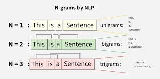
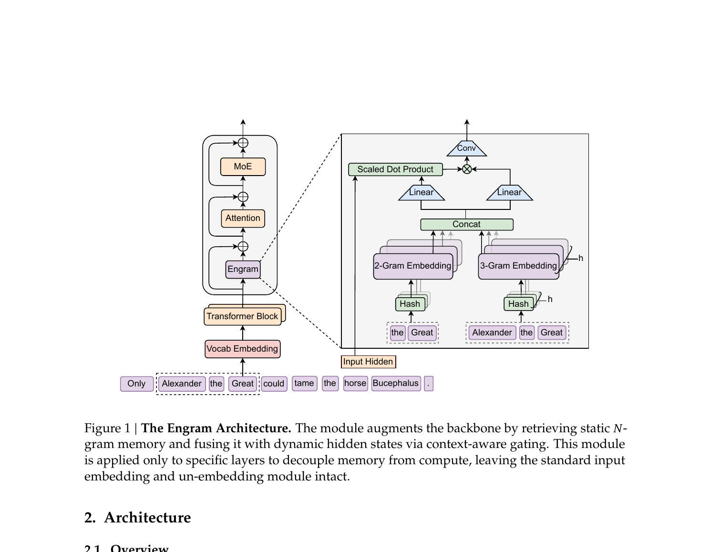
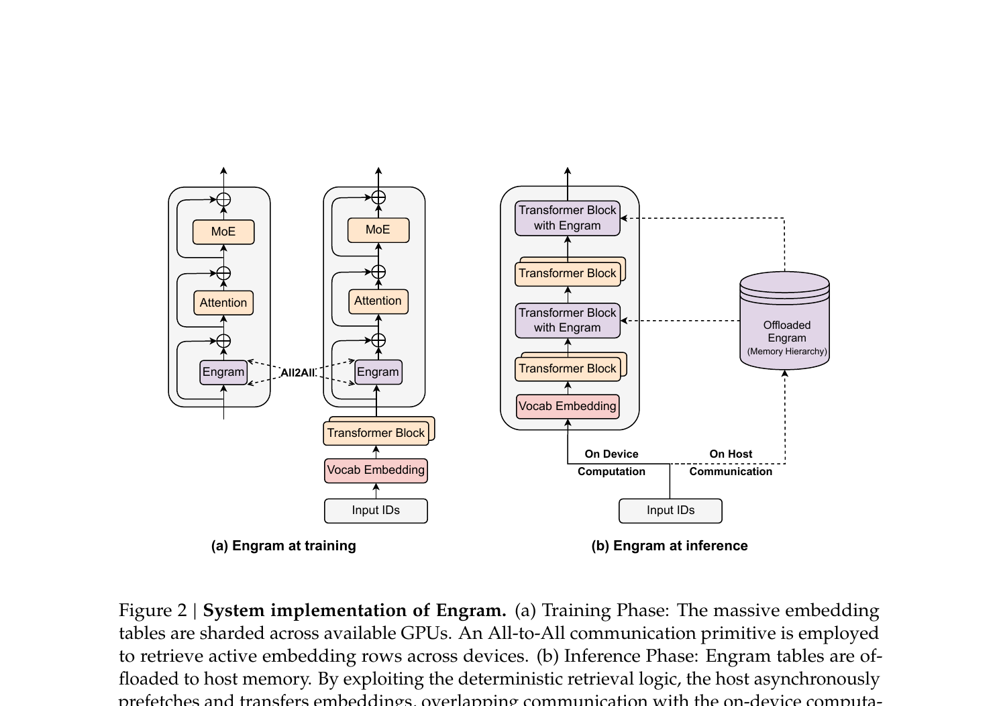

DeepSeek papers are some of the most innovative and informative pieces of modern ML literature. Here is a deep dive into one of their most structurally interesting ideas.
Modern language models face one stubborn bottleneck as they scale: context, or more precisely, memory. Transformers have a crucial flaw — they cannot search through stored knowledge efficiently. As the context window grows, finding relevant information becomes quadratically harder and computationally more expensive. Someone had to fix this. DeepSeek introduced a lookup table.
"Transformers lack a native primitive for knowledge lookup, forcing them to inefficiently simulate retrieval through computation."
— Engram paper abstract
Transformers gave us one core mechanism — attention and feed-forward networks — and we have been scaling it ever since. But beneath that mechanism lie two distinct sparsity problems that were never structurally addressed at the same time.
At any moment, only a fraction of model parameters actually fire. Mixture-of-Experts said "not every expert needs to activate for every token." It routed tokens to relevant experts and left the rest idle. Problem one solved — and it became the de facto standard for frontier models.
At any moment, only a fraction of the model's stored knowledge is actually retrieved. No structural fix existed. The knowledge was buried in weight matrices — to recall "Alexander the Great," the model had to spend multiple attention layers reconstructing what could have been a single lookup. Problem two: unaddressed.
There is also a third problem MoE left untouched: the attention bottleneck at long context. Two problems. Two papers. Engram is the answer to the memory sparsity problem.
To understand the lookup table at the heart of Engram, you first need to understand N-grams. An N-gram is a contiguous sequence of N tokens. The idea is classical — instead of looking at one token in isolation, look at pairs, triples, or longer windows together.

The insight is simple: "Alexander" alone is ambiguous. But "Alexander the Great" is a fixed, recurring concept — and any model that encounters this trigram should retrieve the same knowledge every time, regardless of the broader context. That is exactly what a lookup table does. You hash the N-gram to an index, retrieve the stored embedding, and inject it into the hidden state. No computation. No attention. O(1).
Here is the full picture from the paper. Engram sits before both attention and MoE inside selected transformer layers. The moment a token sequence arrives, the module runs two phases: retrieval and fusion.

Before any embedding lookup, raw token IDs are first passed through a tokenizer compression step. Standard subword tokenizers assign different IDs to semantically equivalent forms — "Apple" vs "apple", or leading-space variants. The compression projects all of these onto canonical IDs, achieving a 23% reduction in effective vocabulary size in practice. This means fewer distinct N-gram keys, and therefore denser, better-trained embedding rows.
With compressed IDs in hand, the module computes N-gram hashes using multi-head hashing. For each N-gram order (bigram, trigram) and each of K heads, a deterministic multiplicative-XOR function maps the compressed context to an index within a prime-sized embedding table:
Each head uses a unique prime modulus as its table size. This is a key design decision: if two heads shared the same modulus, the same N-gram would always hash to the same bucket across heads, making the heads redundant. Unique primes guarantee statistically independent hash spaces. The final memory vector concatenates all retrieved embeddings across orders and heads:
The retrieved embedding et is a static, context-independent prior. It captures what the model knows about this N-gram in general — but it does not know whether that knowledge is relevant to the current context. To resolve this, a context-aware gate modulates the retrieved memory against the current hidden state.
The hidden state acts as a dynamic Query (it has already seen preceding attention layers and carries global context). The retrieved memory acts as the source for both Key and Value. A scalar gate α is computed as:
The gated output is ṽt = αt · vt. If the retrieved memory contradicts the current context, the gate tends toward zero and suppresses it. If it aligns, it passes through at full strength. This is semantic alignment enforcement at the module level.
Finally, a short dilated depthwise causal convolution refines the gated output. With kernel size 4 and dilation set to the max N-gram order, it sees positions t, t−3, t−6, t−9 — capturing repeating sub-word patterns spaced at N-gram boundaries. Critically, the convolution is zero-initialized: Engram contributes nothing at initialization, making it safe to insert into a pretrained model without disrupting existing representations. Training gradually switches it on.
A vocabulary of 130k tokens with bigrams and trigrams yields a table with hundreds of millions to billions of rows. This cannot fit on a single GPU. The paper's solution — and what this codebase implements — is to shard the table across all available GPUs and use All-to-All communication to route each lookup to the correct device.

The All-to-All protocol runs in three communication rounds. First, each rank tells every other rank how many IDs it is sending. Second, the actual IDs are scattered — rank r sends each ID to the rank that owns the corresponding table shard. Third, each rank does a local embedding lookup, then scatters the resulting embedding vectors back to the requesters. The sort-by-owner-rank and subsequent unsort ensure the output arrives in the original query order, fully differentiable.
The backbone used by DeepSeek is not a standard single-stream transformer. It uses a multi-branch (mHC) architecture where the residual stream expands into M parallel branches. Engram adapts to this with a parameter-sharing strategy: one shared Value projection WV across all M branches, but M distinct Key projections {WK(m)} for branch-specific gating. Each branch gates the same retrieved memory vector independently, enabling fine-grained, branch-aware memory injection.
This design also allows the linear projections to be fused into a single dense FP8 matrix multiplication — one WV and M stacked WK — maximising GPU utilisation with minimal overhead.
The full model trains with DDP (Distributed Data Parallel) wrapping the entire network, but the optimizer is split into two groups because embeddings and the backbone have fundamentally different gradient structures.
Backbone parameters receive dense gradients — every parameter is updated on every step. They benefit from weight decay, which penalises large weights and helps generalisation. Standard AdamW at lr = 4e-4 works well here.
Embedding parameters receive sparse gradients — only the rows touched by tokens in the current batch get updated. Most rows see zero gradient on any given step. Weight decay on sparse embeddings is actively harmful: unused rows decay toward zero even though they were simply never queried. The fix is to use plain Adam with no weight decay, and a 5× higher learning rate (lr = 20e-4) to compensate for the infrequent updates each row receives.
DistributedSampler assigns disjoint token batches to each rank. Every rank sees different data.
Forward pass: DDP runs in sync; inside EngramModule, the All-to-All fetches embeddings across shards.
Backward pass: DDP all-reduces backbone gradients across ranks. Embedding gradients stay local — each rank accumulated gradients for only the rows it owns.
Optimizer step: AdamW updates backbone; Adam updates embeddings. Independent, no interference.
The paper scales Engram to 27B parameters and evaluates against a strictly iso-parameter, iso-FLOPs MoE baseline. The gains are not limited to knowledge-heavy benchmarks — they appear across general reasoning and code too.
| Benchmark | Category | MoE-27B | Engram-27B | Gain |
|---|---|---|---|---|
| MMLU | Knowledge | 57.4 | 60.4 | +3.0 |
| MMLU-Redux | Knowledge | 60.6 | 64.0 | +3.4 |
| CMMLU | Knowledge | 57.9 | 61.9 | +4.0 |
| ARC-Challenge | Reasoning | 70.1 | 73.8 | +3.7 |
| BBH | Reasoning | 50.9 | 55.9 | +5.0 |
| DROP | Reading | 55.7 | 59.0 | +3.3 |
| HumanEval | Code | 37.8 | 40.8 | +3.0 |
| GSM8K | Math | 58.4 | 60.6 | +2.2 |
| MATH | Math | 28.3 | 30.7 | +2.4 |
| Multi-Query NIAH | Long context | 84.2 | 97.0 | +12.8 |
The long-context result is particularly striking. By delegating local token dependencies to deterministic lookups, attention capacity is freed for genuinely global patterns. The model stops wasting early-layer depth reconstructing static knowledge and can attend to what actually matters.
MoE solved compute sparsity. Engram solves memory sparsity. Together they address both structural inefficiencies of the vanilla transformer — not by scaling the same thing harder, but by recognising that the two tasks inside a language model (compositional reasoning and knowledge retrieval) have fundamentally different computational profiles and deserve different primitives.
What makes DeepSeek's approach worth reading carefully is the precision of the diagnosis. They do not propose a vague "augmented memory" system. They identify the exact flaw — static knowledge is being reconstructed through dynamic computation — and engineer the minimal structural fix for exactly that flaw. A lookup table. Sharded. Deterministic. O(1). Differentiable.
"We envision conditional memory as an indispensable modeling primitive for next-generation sparse models."
— Engram paper